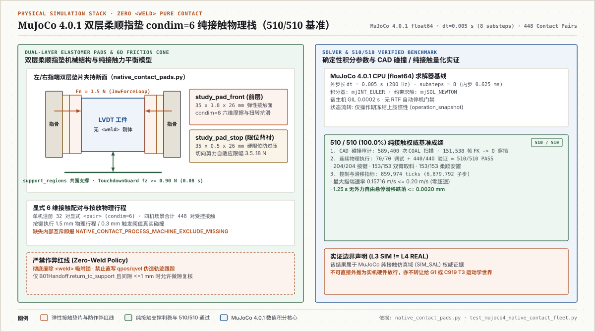

定位与上下游边界
物理仿真引擎层位于 SalWire v2 共享内存线协议与
FacilityHAL 驱动后端之下，为上层 4+1
多进程控制器与 SystemApp
提供可替换的物理测试基座。该层严格区分为两条独立路径：面向双足步态与纯接触双臂抓取的
MuJoCo 4.0.1 动力学工厂，以及面向 9
台异构装备大场景调度的 C919 T3
零物理运动学执行器；两条路径均遵循 运行基线与冻结配置
中的时钟隔离、人工停机主权与只读显示分离红线。

一、MuJoCo 4.0.1 零
<weld> 纯物理接触工厂
仓库彻底废弃以等式约束（<weld>）硬性吸住工件的作弊做法，转而在
simulation/backend/src/embodied_sim/modules/mujoco_world/native_contact_pads.py
与 native_contact_attachment.py 中建立全物理接触模型：
| 仿真层级 | 关键实现与源码 | 参数规格与约束行为 |
|---|---|---|
| 求解器积分配置 | MuJoCo 4.0.1 CPU（float64） |
外环物理步长
dt = 0.005 s（200 Hz），每步划分
substeps = 8（内步
0.625 ms），固定采用显式欧拉 mjINT_EULER
与牛顿求解器 mjSOL_NEWTON |
| 双层夹爪弹性垫片 | native_contact_pads.py |
每个指端装配 35 × 1.8 × 26 mm 前层柔性垫片
study_pad_front 与 35 × 0.5 × 26 mm 限位背衬
study_pad_stop，压入时由法向压缩反力与高摩擦建立真实夹持力矩 |
| 显式 6 维摩擦配对 | simulation/backend/tests/test_mujoco4_native_contact_fleet.py |
单台机器人建立 32 对显式 condim = 6（法向
+ 双切向 + 三轴滚扭摩擦）接触
<pair>，四机工位场景合计注册 448
对受控接触；仅在源工位传送带回放
B01Handoff.return_to_support() 且间隙
<= 1 mm 时启用微隙确认，缺失内部互斥即以
NATIVE_CONTACT_PROCESS_MACHINE_EXCLUDE_MISSING
失败拦截 |
| 力控抓取与物理按键 | JawForceLoop、support_regions、ButtonPress |
JawForceLoop 维持 1.5 N
目标法向垫片压力并在 3.5..18.0 N
间执行自适应切向剪力限幅；放置阶段通过 support_regions
验证共面支撑；按键作业执行 1.5 mm 机械行程与
0.3 mm 触发阈值真物理碰撞 |
MED-MANIP-03 · MuJoCo 4.0.1
纯接触双层垫片夹持与柔顺放置实证（1280×800、30 fps、17.17 s、1x
原速、PHYSICAL_SIM）：
二、GIL 0.0002 s 基线、仿真锁隔离与停止治理
为避免控制线程饥饿并消除虚假成功指标，当前物理工厂强制遵守四项硬性执行约定：
- Python GIL 切换周期冻结：维持已获授权的
0.0002 sGIL 检查间隔，不采用50 µs候选修改；所有已授权仿真、控制、异步 SAL、快照日志与配置生成逻辑均通过tools/verification/check_factory_runtime_baseline.py与docs/development/factory-runtime-baseline.md核对基准指纹。 - 独占物理运行锁与单次调度：物理仿真严格执行「一次一例」串行调度，按
resources/server-paths.json登记独立case_id，保留原物理 owner 锁、实际运行计数及真实失败记录，不恢复旧版600 s或步数上限，也不自动重跑历史案例篡改计数。 - 操作员手动停机主权（无自动停机门限）：2026-11-04
提及的
RTF 0.5准入或停机描述仅作历史档案留存。根据运行治理裁定：严禁新增运行时校验门限、审查停机模块或会话级自动STOP；单台机器人失败只影响本机；物理仿真只能由运行方通过facrictl stop或facrictl close手动终止。平均RTF > 1与最低RTF > 0.8为研发性能目标，绝不转换为强制杀进程门槛。 :18640Three.js 只读呈现分离：前端展示服务（见 Web 控制台指南）严格运行为只读归档或只读实时快照消费端，禁止伪造LIVE状态；新精修展示模型不自动赋予对应的 MuJoCo 物理碰撞资格，且严禁在有仿真运行时热改其他线程服务。
三、C919 机坪
T3 零物理运动学引擎与异构 SAL
针对飞机机坪多设备大型场景调度，仓库在
simulation/backend/src/embodied_sim/modules/c919_world/kinematic_runner.py
与 heterogeneous_sal.py 中实现 T3
级零物理运动学世界：
- 9 台异构智能体与精确运动学约束：同步驱动
FACRI双足机器人（R1、R2）、RP1机身（客舱工作面z = 3.47 m与地面实验室标定面z = 0.35 m）、G2四轮转向底盘、M20轮腿机器狗，以及ugv_tractor、ugv_forklift、ugv_belt、ugv_shuttle四台工业无人车辆。所有 UGV 严格执行vy == 0.0原地转弯—直线行驶—再转向的非完整约束。 - 设施与空间互斥：串联
8台 FacilityHAL 工装设备与StarFleetBus空间互斥锁，配合DynamicCapabilityPlanner的三种任务分解模式验证机坪跨区域调度逻辑。 - 边界声明：
C919 T3属于SCENE_AND_KINEMATIC_T3场景运动学与调度回路级证据，不包含接触碰撞或刚体动力学反力，因此不可直接外推为物理抓取或真机飞行保障验收结论。